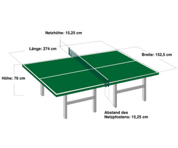

Burgers
5 von 6600 gr. gemischtes Hackfleisch mit Chilli, Zwiebeln, Knoblauch, Salz und Pfeffer vermengen. Zu Burgers formen und braten. Das Brot mit Gurken, Tomaten, Salat und ungedämpften Zucchini belegen. Das Fleisch dazu und eine Mayonaise-Ketchup Sauce darüber.
